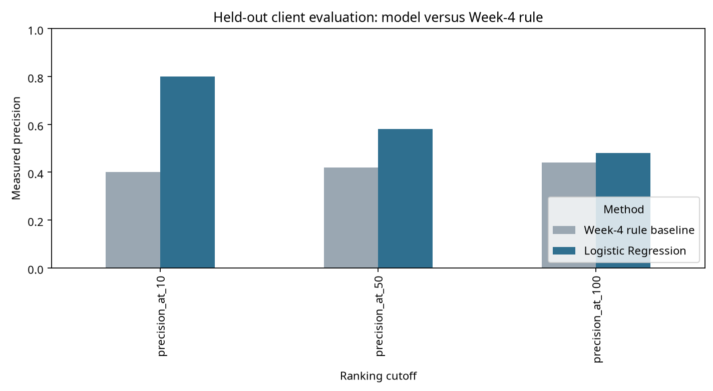
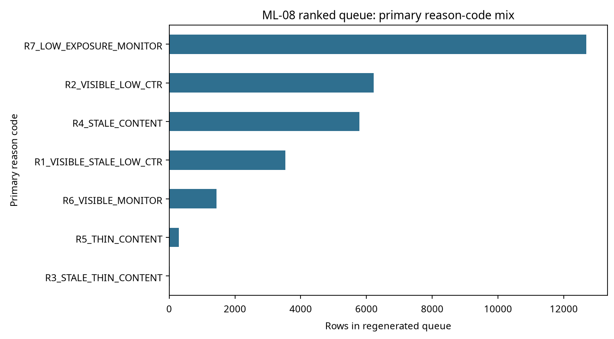

Introduction / Problem statement
Content teams rarely have enough time to inspect every page with equal depth. The decision here is which pages to review first for a bounded refresh assessment. The action may be a title/snippet review, a depth review, a freshness check, or a decision to monitor rather than edit. A wrong recommendation costs editorial time or misses a potentially useful review; therefore the score is designed as a prioritization aid, not a publishing instruction.
Data
The analysis uses 30,000 rows, 32 pseudonymous clients, and 44 columns from data/raw/content_refresh_anonymized.csv. Each row is one pseudonymized content item with trailing-90-day aggregate signals. The repository also documents a separate Hugging Face warehouse release with daily performance, content, client, and query tables across 2025-01-27 to 2026-06-30; this paper does not claim to train on that warehouse. It uses the starter snapshot only, to keep the grain and evaluation window explicit.
IDs are used only for grouping and splitting. Trend fields, future-window fields, and product-decision flags are excluded from model inputs. Rate columns follow the repository data dictionary: for example, ctr = 0.76 means 0.76%, and avg_position = 0 means no data.
Methodology
The target proxy is 1 when trend_direction == "down". It is not a claim that a page needs editing, and it is never a feature. The learned model is Logistic Regression with training-only median/mode imputation, scaling, and one-hot encoding. The Week-4 baseline is the transparent rule visible × page_one_two × low_ctr × log1p(impressions_90d).
The primary validation is a grouped holdout by client_id; no client is present in both train and test. ML-07 also compared a random row split with the grouped split. The leakage audit excluded trend_direction, trend_pct, is_declining_label, IDs, future-window fields, and decision flags. A deliberate target-copy probe produced a perfect diagnostic score and was not used in the final model.
Results
The following table reports the model and baseline on the same held-out clients. Precision@K is the operational metric because the intended decision is a short review queue; the base rate and secondary diagnostics prevent the short-cutoff result from being read in isolation.
| Method | Precision@10 | Precision@50 | Precision@100 | Average precision | ROC AUC | Test base rate |
|---|---|---|---|---|---|---|
| Week-4 rule baseline | 0.40 | 0.42 | 0.44 | 0.4991 | 0.5118 | 0.5110 |
| Logistic Regression | 0.80 | 0.58 | 0.48 | 0.5386 | 0.5503 | 0.5110 |

Limitations & honest framing
This is a cross-sectional starter snapshot with a proxy label, not a prospective experiment. It does not estimate the effect of editing a page, prove that age or CTR causes decline, or guarantee transfer to new clients, future months, or business outcomes. The grouped holdout reduces client-mix leakage, but a time-aware prospective evaluation and pre-specified follow-up window are still needed.
Safe interpretation: the model ranks pages for review at measured precision on this held-out split. It does not tell us which edit will work or promise a traffic outcome.
Ranked recommendations
The action playbook turns scores into bounded review actions. Every row has one reason code and one action. The top recommendation is to review visible, stale, low-CTR pages first because they combine exposure, visibility, and staleness signals; the reviewer still checks current intent and SERP context. Other rows receive snippet review, depth review, freshness review, coverage review, or monitoring/defer actions.
| Priority archetype | Reason code | Human action | Limit |
|---|---|---|---|
| Visible + stale + low CTR | R1 | Review title/snippet and intent alignment | Do not edit without page and SERP review |
| Visible + low CTR | R2 | Review snippet and SERP alignment | Low CTR alone is not poor quality |
| Stale or thin content | R3/R4/R5 | Write a bounded depth, freshness, or coverage brief | Age and word count are screening cues |
| Mixed or low exposure | R6/R7 | Monitor or defer active editing | Collect more evidence before spending time |

No-go cases: never automatically publish, delete, redirect, rewrite, or mass-edit pages; never select a target keyword without an analyst; never make regulated-content decisions; and never use the score to promise recovery.
Reproducibility
The complete work is in the public GitHub repository. Start with the capstone notebook, then inspect the model, validation audit, and action playbook. Seed 42 is recorded in the receipts, and the notebooks regenerate the metrics, queue, and charts.
Acknowledgments & data credit
Built on the FlyRank ML Internship dataset. Data source: FlyRank. The page reports public-safe, pseudonymized, aggregate findings for educational research.
Communication package
Five-minute demo
Frame the decision; show the baseline; explain the grouped validation; compare Precision@10/50; open the reason-coded playbook; close with limits and no-go cases.
Employer summary
I framed content refresh as a ranking problem, built a transparent baseline and Logistic Regression model, and validated the comparison with a client-grouped holdout. The model measured 0.80 Precision@10 and 0.58 Precision@50 versus 0.40 and 0.42 for the Week-4 rule. I converted the result into a reason-coded, human-reviewed playbook with leakage checks, limits, and monitoring triggers.